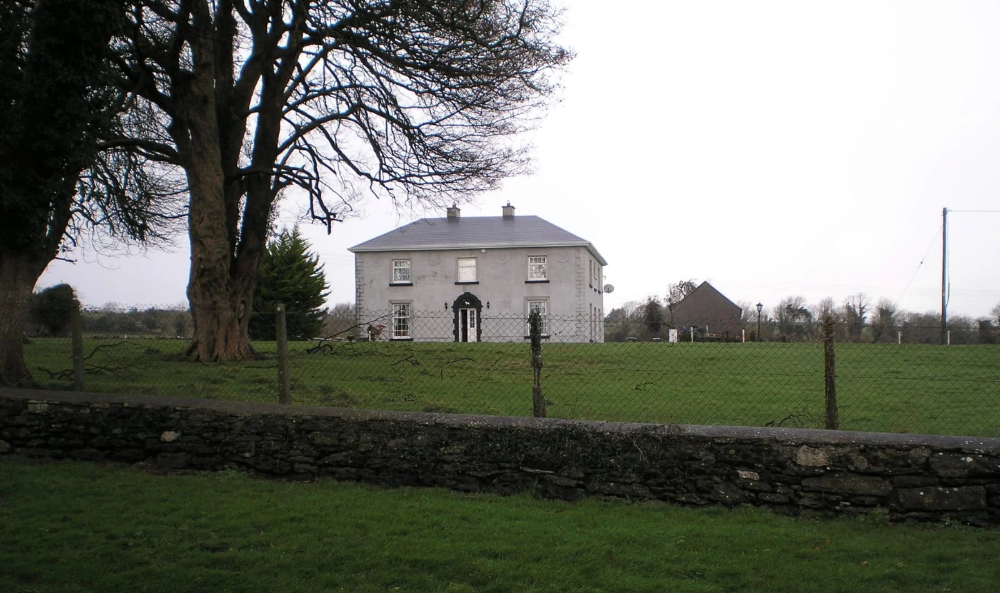

Carrowroe
Carrowroe in Irish “An Cheathrú Rua” means red quarter land, the quarter referring to an old measurement of land. In the Electoral division of Marblehill it is 188.34 acres or 76.22 hectares in size.
In the 1841 census there were 27 people and 4 houses in the townland, and in the 1851 census there were 19 people and 2 houses. The 1840 map indicated 7 houses or outbuildings, and Griffith’s Valuation recorded 2 houses and 3 landholders. In the 1901 census there was 1 residence and 4 inhabitants, and in the 1911 census there was 1 residence and 3 inhabitants.
Carrowroe borders Ballynakill, Clooneen, Drumkeary West, Knockdrummore, Knockmoyle East, Kylenagappa and Marblehill.
Carrowroe House
Carrowroe House, also known as Carrowroe Lodge, is a substantial dwelling in the east of the townland. It was the property of Sir Thomas Burke of Marblehill; it was recorded in 1837 as the residence of Mr. Hyacinth Clarke and is still occupied today.

The 1840 map showed a different entrance to the house, from the east end off the Burroge road via two dwellings, and the site of an ancient Gaelic castle known as Ballinakill Castle. The same map also recorded a ringfort at the north end of the townland.
It was in Carrowroe House — then the home of Ms. Anna Rafferty — that Fr. Tom Larkin, P.P. of Ballinakill and Derrybrien, founded the Ballinakill Traditional Players in 1925. Made up of Tommy Whyte and Gerry Maloney (fiddle), Tommy Whelan and Stephen Moloney (flute) and Anna Rafferty (piano), they went on to great achievements, including being the first Irish traditional musicians to play on Irish radio, in 1929, on what was then known as 2RN — another example of the great musical heritage of our parish. Listen to an RTÉ radio documentary on the Ballinakill Ceilí Band here.
Population
Map
Placenames
| Name | Type | Notes |
|---|---|---|
| Barrell’s Lot | field | Refers to Barrell Rafferty. |
| Kilcar’s | field | |
| Sheanan’s | field | |
| Mahony’s | field |
Houses
| Name | Notes |
|---|---|
| Carrowroe House | Clarke’s and Kavanagh’s lived here. |